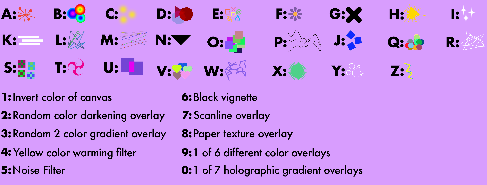

This program binds each letter key on your keyboard to a different shape or symbol in order to translate your typing into a piece of procedural abstract artwork. In addition to the letter keys, each of the number keys are bound to different filters, effects, and textural overlays to further enhance the designs. Below is a handy little chart that shows what each key corresponds to. At the bottom of the page you can see a live feedback of which keys you have entered into the program. This program works destructively, which means there is no going back after something is typed. The only way to go back is to start over by refreshing the page.
